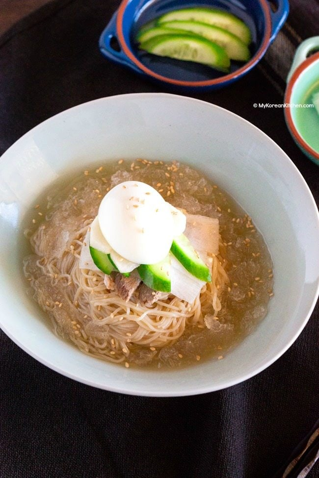
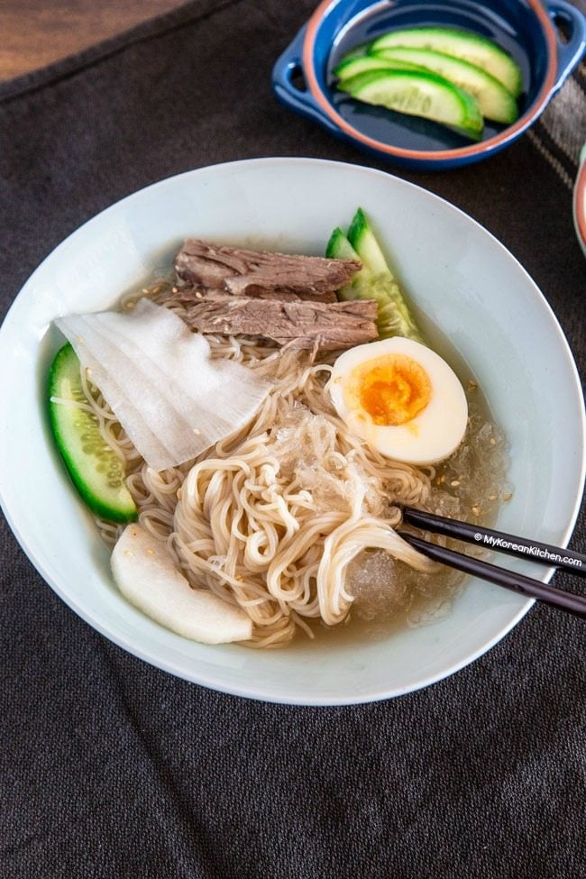
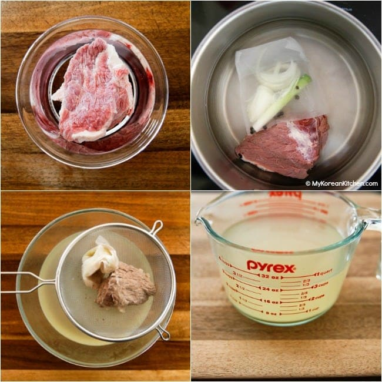
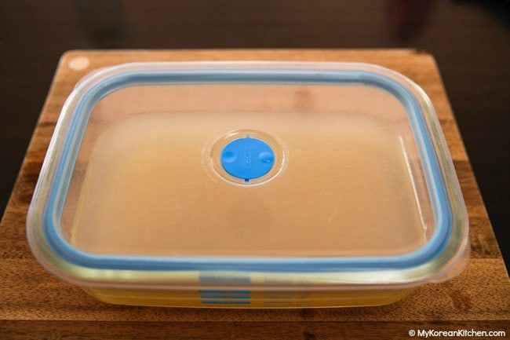
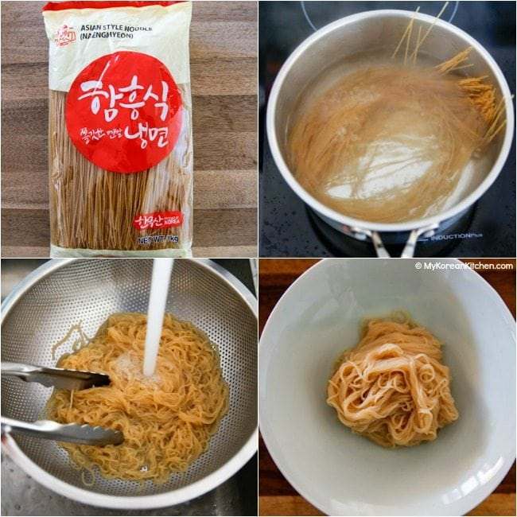

Let’s make some popular Korean summer noodles – Mul Naengmyeon! These noodles are served in icy cold broth and will help you forget about hot and humid summer weather!
Mul Naengmyeon or Mul Naengmyun (물냉면) is cold noodles served in a chilled broth made from beef and/or Korean radish water kimchi (dongchimi, 동치미).
The noodles are also topped with sliced cucumbers, Korean pears, pickled radishes, boiled beef and boiled egg. These add subtle flavor of sweetness, tanginess and savoriness in between them. Overall the noodles have a very mild and refreshing taste and are somewhat moreish.
Naengmyeon was originally enjoyed during the winter months of Korea but it became a popular summer noodles. This makes more sense to me since the noodles and broth are served very cold!
Another popular time to have naengmyeon is as you finish Korean BBQ. For sure, not everyone has spare stomach after doing Korean BBQ, but many Koreans order naengmyeon as their pre-dessert dish.
As you can imagine, these cold noodles and broth taste even more refreshing after a hot and smoky BBQ experience. 😉
Mul Naengmyeon has a sister noodle called Bibim Naengmyeon. Unlike Mul nangmyeon, those noodles are served dry (these’s no broth) and it’s quite spicy.
Naturally, you will see some people preferring one over the other. I love them both, but I do love the spicy sensation the bibim naengmyeon gives me!
I briefly mentioned that mul naengmyeon often uses dongchimi (radish water kimchi) soup as a naengmyeon broth. While it’s not a mandatory, if you truly want your broth to be refreshing, I believe it is a must!
Though, often well aged dongchimi takes some time to develop, so if you’re planning to make some mul naengmyeon, I suggest you plan it quite ahead of time. (Unless, of course, you’re going to buy some dongchimi kimchi from a store!)
You can make the naengmyeon broth ahead of time and portion it then freeze it. These can last for a few months, so it can save your time hugely when the craving hits.
If you’re feeling very lazy about cooking and preparing all these, you can also go with the instant versions. These are available from a Korean grocery store and can be found in the refrigerator section. Though, it does have some artificial sauce taste.
Anyway, I hope you give this naengmyeon recipe a try soon!
Noodle and Toppings
Naengmyeon Broth
* 1 Tbsp = 15 ml, 1 Cup = 250 ml
Once the water starts rapidly boiling, reduce the heat to medium low. Simmer it until the brisket is tender and cooked. (Normally, I boil them about 1 hour, in total.) Strain the broth and cool it down for 30 mins. (This should result in about 3 cups of broth.)
Take out the meat onto a plate and cool it down until safe to touch. Cut any stringy fat off the meat and thinly slice it.
Cover the bowl / container and put it into the freezer and lightly freeze it (3-4 hrs). Alternatively, you can freeze it overnight and defrost in the fridge or at room temperature (if winter) until the broth is icy cold and slightly slushy when served with the noodles. If necessary, you can shave off the ice using a fork.
Drain the water quickly and portion the noodles for serving. Place a mound of noodles into a serving bowl.
